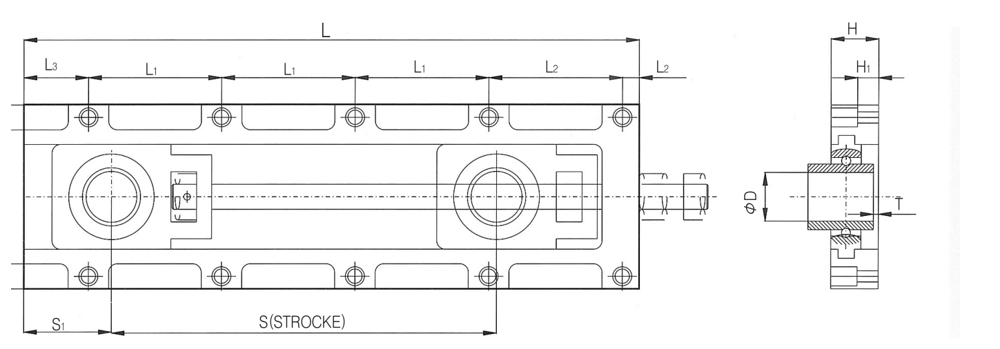

Take-up Units
UC 베어링 인서트를 삽입하는 테이크업 유닛입니다. 204~212 사이즈, 짧은 조정거리(A)·긴 조정거리(B) 두 스트로크로 공급되며, 벨트 컨베이어 라인에 주로 사용됩니다. 215A·B, 216A·B는 주문생산입니다. 동일 규격의 스테인리스 케이스(SUS-TM)와, 프레스 성형 강판 케이스인 TFU·SUS-TFU도 하단에 함께 정리했습니다.
당사 정식 규격 도면 (B형 · 긴 조정거리 기준)

L=전장 · L1=볼트 구멍 간격(반복) · L2·L3=단부 길이 · S1=조정볼트 위치 · S(STROKE)=조정거리 · H·H1=높이 · φD=축경 · T=두께
A형(짧은 조정거리)도 동일한 치수 기호 체계를 사용합니다.
| 구분 | L | L1 | L2 | W | W1 | H | H1 | D(축경) | T±0.5 | S1 | STROKE | 조정볼트 | 고정볼트 |
|---|---|---|---|---|---|---|---|---|---|---|---|---|---|
| UCTM-204A | 170 | 150 | 10 | 102 | 82 | 26 | 17 | 20 | 4.5 | 35 | 55 | M14 | 4-M8 |
| UCTM-205A | 170 | 150 | 10 | 102 | 82 | 26 | 17 | 25 | 2.5 | 35 | 55 | M14 | 4-M8 |
| UCTM-204B | 250 | 115 | 10 | 102 | 82 | 26 | 17 | 20 | 4.5 | 35 | 135 | M14 | 6-M8 |
| UCTM-205B | 250 | 115 | 10 | 102 | 82 | 26 | 17 | 25 | 2.5 | 35 | 135 | M14 | 6-M8 |
| 구분 | L | L1 | L2 | L3 | W | W1 | H | H1 | D(축경) | T±0.5 | S1 | S(스트로크) | 조정볼트 | 고정볼트 |
|---|---|---|---|---|---|---|---|---|---|---|---|---|---|---|
| UCTM-206A | 260 | 110 | 10 | 30 | 122 | 100 | 28 | 17 | 30 | 2.3 | 55 | 115 | M16 | 6-M10 |
| UCTM-207A | 310 | 130 | 13 | 37 | 132 | 108 | 29 | 16 | 35 | 1 | 60 | 140 | M18 | 6-M12 |
| UCTM-208A | 350 | 150 | 13 | 37 | 144 | 120 | 34 | 21 | 40 | 4 | 65 | 175 | M20 | 6-M12 |
| UCTM-209A | 420 | 170 | 15 | 65 | 164 | 136 | 38 | 23 | 45 | 7.5 | 75 | 210 | M24 | 6-M14 |
| UCTM-210A | 420 | 170 | 15 | 65 | 164 | 136 | 38 | 23 | 50 | 6.5 | 75 | 210 | M24 | 6-M14 |
| 구분 | L | L1 | L2 | L3 | W | W1 | H | H1 | D(축경) | T±0.5 | S1 | S(스트로크) | 조정볼트 | 고정볼트 |
|---|---|---|---|---|---|---|---|---|---|---|---|---|---|---|
| UCTM-206B | 320 | 130 | 10 | 50 | 122 | 100 | 28 | 17 | 30 | 2.3 | 55 | 165 | M16 | 6-M10 |
| UCTM-207B | 390 | 160 | 12 | 58 | 132 | 108 | 29 | 16 | 35 | 1 | 60 | 225 | M18 | 6-M12 |
| UCTM-208B | 455 | 185 | 12.5 | 72.5 | 144 | 120 | 34 | 21 | 40 | 4 | 65 | 285 | M20 | 6-M12 |
| UCTM-209B | 580 | 170 | 15 | 55 | 164 | 136 | 38 | 23 | 45 | 7.5 | 75 | 375 | M24 | 8-M14 |
| UCTM-210B | 580 | 170 | 15 | 55 | 164 | 136 | 38 | 23 | 50 | 6.5 | 75 | 375 | M24 | 8-M14 |
| 구분 | L | L1 | L2 | L3 | W | W1 | H | H1 | D(축경) | T±0.5 | S1 | S(스트로크) | 조정볼트 | 고정볼트 |
|---|---|---|---|---|---|---|---|---|---|---|---|---|---|---|
| UCTM-211A | 540 | 155 | 15 | 60 | 190 | 161 | 43 | 28 | 55 | 5.5 | 90 | 300 | M27 | 8-M14 |
| UCTM-212A | 540 | 155 | 15 | 60 | 190 | 161 | 43 | 28 | 60 | 2.5 | 90 | 300 | M27 | 8-M14 |
| UCTM-211B | 715 | 155 | 19.5 | 75.5 | 194 | 128 | 43 | 28 | 55 | 5.5 | 90 | 475 | M27 | 8-M14 |
| UCTM-212B | 715 | 155 | 19.5 | 75.5 | 194 | 128 | 43 | 28 | 60 | 5.5 | 90 | 475 | M27 | 8-M14 |
단위: mm · UCTM-215A·B, 216A·B는 주문생산품으로 카탈로그에 규격이 실려 있지 않습니다(견적 문의로 안내).
| 형번 | 적용 축경(mm) | L(전장) | W(폭) | H(높이) | T(두께) | Stroke(조정거리) | 고정볼트 |
|---|---|---|---|---|---|---|---|
| SUS-TM204A | 20 | 170 | 102 | 26 | 4.5 | 55 | 4-M8 |
| SUS-TM205A | 25 | 170 | 102 | 26 | 2.5 | 55 | 4-M8 |
| SUS-TM206A | 30 | 260 | 122 | 28 | 2.3 | 115 | 6-M10 |
| SUS-TFU204 | 20 | 문의 | 문의 | 문의 | 문의 | 문의 | 문의 |
| SUS-TFU205 | 25 | 문의 | 문의 | 문의 | 문의 | 문의 | 문의 |
| SUS-TFU206 | 30 | 문의 | 문의 | 문의 | 문의 | 문의 | 문의 |
| SUS-TFU207 | 35 | 문의 | 문의 | 문의 | 문의 | 문의 | 문의 |
| TFU204 | 20 | 문의 | 문의 | 문의 | 문의 | 문의 | 문의 |
| TFU205 | 25 | 문의 | 문의 | 문의 | 문의 | 문의 | 문의 |
| TFU206 | 30 | 문의 | 문의 | 문의 | 문의 | 문의 | 문의 |
| TFU207 | 35 | 문의 | 문의 | 문의 | 문의 | 문의 | 문의 |
SUS-TM204A~206A는 TM204A~206A(위 UCTM-204A~206A)와 동일 하우징(재질만 스테인리스)으로 치수가 동일합니다. TFU·SUS-TFU는 TM 시리즈와 다른 프레스 성형 강판 케이스 구조로, 당사 거래처 자료에서는 상세 치수를 확인하지 못해 위 표는 “문의”로 남겨두었습니다.
※ 추가로 인터넷 검색을 통해, 동일 명칭(TFU·NPTH)의 프레스 성형 테이크업 유닛을 판매하는 중국 베어링 제조사(CVZ Bearing)의 공개 치수표를 아래에 참고용으로 덧붙입니다. TFU·NPTH는 업계 표준 규격이 아니라 제조사마다 치수가 다른 범용 명칭이므로, 당사가 실제 공급하는 제품과 100% 일치한다고 보장할 수 없습니다. 정밀 발주 전에는 반드시 당사 견적 문의로 실치수를 확인해 주세요.
| 형번(CVZ) | 적용축경 | M | L | 4-φN | R | B | C | E | F | G | H | l | J | T | 중량(kg) | |
|---|---|---|---|---|---|---|---|---|---|---|---|---|---|---|---|---|
| TFU204 / NPTH204 | 20 | 14 | 100 | 11 | 260 | 233.5 | 65 | 90 | 99 | 189 | 41 | 16 | 29 | 18.3 | 2.8 | 1.15 |
| TFU205 / NPTH205 | 25 | 14 | 100 | 11 | 260 | 233.5 | 65 | 90 | 99 | 189 | 41 | 17 | 29 | 19.7 | 2.8 | 1.20 |
| TFU206 / NPTH206 | 30 | 18 | 150 | 15 | 382 | 342 | 73 | 113 | 123 | 272 | 60 | 22 | 42 | 22.2 | 3.0 | 2.45 |
| TFU207 / NPTH207 | 35 | 18 | 150 | 15 | 382 | 342 | 73 | 113 | 123 | 272 | 60 | 22 | 42 | 25.4 | 3.0 | 2.70 |
단위: mm · 출처: CVZ Bearing(중국) 제품 공개 데이터(made-in-china.com 판매 페이지). 열 기호는 원 자료 표기를 그대로 옮긴 것으로, 위 UCTM 표의 L·W·H·T 기호와 1:1로 대응하지 않을 수 있습니다. SUS 버전(SUS-TFU)도 하우징 치수는 동일하고 재질만 스테인리스입니다.
※ 위 표는 당사 정식 규격표(테이크업 유닛 챕터)를 기준으로 작성했습니다. SUS-TM 구간은 국내 베어링 판매처 2곳의 제품상세 치수표에서 교차 확인했습니다(출처: bearingworks.co.kr, bearingstore.co.kr). 정밀 가공·발주 전에는 반드시 당사 정식 규격표 원본 또는 견적 문의로 최종 확인하시기 바랍니다.